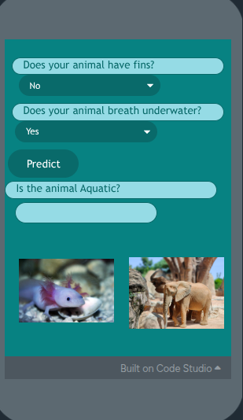

What This Artifact Is
This artifact is an AI model designed to figure out if an animal is aquatic or not.
Screenshot or Visual

Project Link
Why I Chose This Artifact
This project stood out to me because of all the other projects that I hadn't done; I felt this was my best option out of the few that I had to pick from.
What Skill It Shows
This project shows the skill of creating a good design. It also shows that I am capable of building an app for many different kinds of uses.
What I Learned From It
I learned skills like problem solving, because I ran into the problem of not getting a high accuracy. I learned that every time an animal had fins, it would most likely be aquatic.
What Makes This Different From My Other 4 Artifacts
My other artifacts show my coding skill, but this one shows perseverance because I couldn't get a high percentage, but I persevered and got it up a lot.